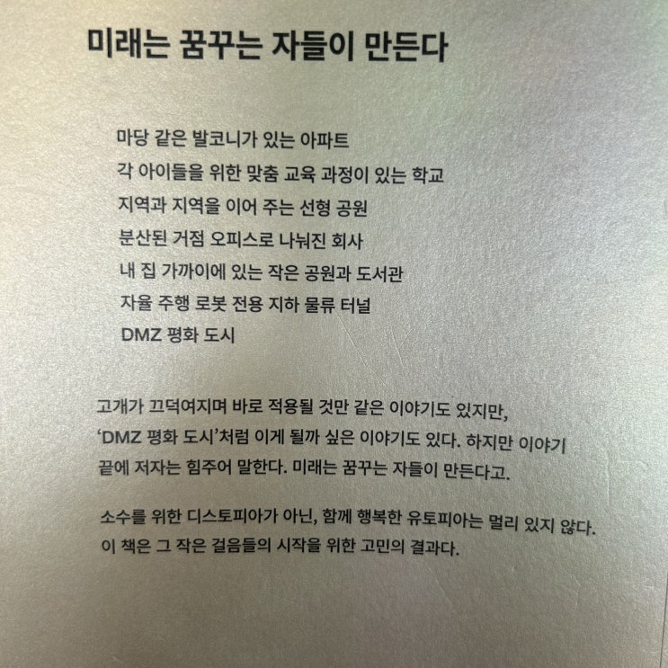

![[서평] 공간의 미래 (유현준) 이미지 1](../../assets/images/note-33/p193-01.jpg)
예전에 코로나 시절에 선물을 받아서 한참을 안읽고 있다가 이번 연휴 기간 동안 (금요일에 휴가 냈음 ㅋㅋ) 읽어보았는데
꽤나 헷깔리는 책이었다.
헷깔린다고 말하는 이유는 책 제목이나 뒤에 있는 소개와는 관련이 없는 좋은 내용들이 많아서 였다.
응? 칭찬이지요?
응?
책 앞장이나 이렇게 책 뒷장을 보면 쌈마이 같은 이야기로 도배되어 있어서 뭐.. 그냥 코로나에 편승한 그런 책이네.. 라고
생각하기 쉬우나 의외로 안에는 이것저것 다양한 생각들과 지식들이 담겨있는 좋은 책이었다.

DMZ 평화도시 (.......)
이 정도면 을유문화사가 잘못한게 맞내 맞아...
책은 표지처럼 코로나 이야기로 시작한다.
그리고는 코로나로 인한 사회의 변화상과 공간 권력의 해체 및 재구성 이야기를 한다.
내가 만든 '공간과 권력의 제1 원칙'은 "같은 시간에, 같은 장소에, 사람을 모아서, 한 방향을 바라보게 하면 그
시선이 모이는 곳에 권력 이 창출된다"는 것이다. 고대 메소포타미아의 사람들은 이런 공간적인 환경을 만들기
위해서 높은 신전 건축물을 만들었다. 티그리스 유프라테스 강가의 평지 위에서 모든 사람은 같은 눈높이를 가
지게 되어 권력적으로 평등한 위계를 갖는다.
그런데 그곳에 지구라트 신전 이 생겨나면서 높이 차이가 생겨나
고, 균질했던 권력의 장벽이 깨지고 가장 높은 포인트 한쪽으로 힘이 쏠린다.
누군가는 높은 위치에서 내려다보
게 되고, 누군가는 우러러 올려다보아야 한다. 이러한 눈높 이의 차이가 시선을 한쪽으로 쏠리게 하고, 이는 권
력의 위계를 만들 어 낸다. 일반적으로 높은 곳은 좁고, 낮은 곳은 넓다. 중력에 대항해 서 안정성을 갖기 위해서
다. 그래서 산의 아래는 면적이 넓고 정상은 좁은 것이다. 당연히 높은 곳에 올라가서 차지하는 사람은 소수고
이 들은 수많은 사람의 우러러 보는 시선을 받게 되며 소수의 권력자가 된다. 마치 아무것도 없던 우주 공간에
태양이 생겨나면서 중력장이 생기고 주변으로 행성이 회전하듯,
높이 만들어진 지구라트 건축물 은 주변에 권력
의 중력장을 만든다
p68
종교를 설명하면서 다루었지만 공간 구조와 권력의 작동 원리에 대 해서 다시 정리해 보자. 첫째, 사람들의 시선
이 한곳에 모이는 곳에 위치하면 권력을 갖게 된다. 둘째, 더 많은 사람이 함께 볼 때 권력이 더 강해진다. 공간
을 통한 권력 창출의 특징을 종교 시설과 똑같이 보여 주는 기관이 학교다.
학교 역시 같은 시간 같은 실내 공간
에 학 생들을 모아 놓고 한 방향을 바라보게 한다.
이때 앞에 서 있는 선생 님은 권력을 가지게 된다. 1980년대
에는 한 반 규모가 70명 정도고 전교생이 3천 명 정도였고 토요일에도 등교를 했다. 70명에게 일주일 에 6일 동
안 아침 저녁 조회와 종례를 하면서 학생들이 바라보는 교 단에 서 있는 담임 선생님의 권력이 70x6x2=
840'이라면, 3천 명에 게 일주일에 한 번 운동장 조회로 훈육을 하셨던 교장선생님의 권력 은 3천이다. 3000/
840= 3.6' 정도이니 교장선생님의 권력은 담임 선생님보다 3.6배 정도 크다고 볼 수 있다. 운동장에 3천 명의
학생을 줄 세워 놓고 마이크로 훈계하시던 교장선생님은 사단장과 같은 권 위를 가진다. 이런 공간 구조를 통해
서 교권이 만들어지고 학교 사회 가 유지되고 지식이 전달된 부분이 컸다. 우리가 학교에서 배우는 지 식을 그대
로 수용하는 이유에는 공간적인 배경도 한몫 차지한다.
p92
그 다음엔 이 아조씨는 잘 모르는 개발 및 건축 관련 이야기를 많이 하다가 (아래는 그 와중 좋은 문구들 기록해 봄)
사람이 모여 살면 갈등이 생길 수밖에 없다. 그 문제를 해결하는 방법 은 두 가지다. 하나는 소프트웨어적인 방
법, 다른 하나는 하드웨어적인 방법이다.
소프트웨어적인 방법은 각종 세금 정책과 행정 정책들 이고, 하드웨어
적인 방법은 공간 구조를 바꾸는 것
이다. 우리나라 계 층 간 갈등의 일정 부분은 잘못 디자인된 공간 구조 때문
이다. 현관 문을 열고 나오면 만나는 모든 공간이 인도나 차도 같은 이동하는 공 간이다. 걸어서 갈 만한 거리에
공원도 없고 길거리에 벤치도 거의 없 다. 앉으려면 커피숍에 돈을 내고 들어가야 한다. 그래서 서울은 전 세계
에서 단위 면적당 커피숍 숫자가 제일 많은 도시다. 문제는 여기 서부터 생긴다. 돈이 많은 사람은 5,000원을 내
고 스타벅스에 들어가 고 적은 사람은 1,500원을 내고 빽다방에 간다. 이 도시에는 돈이 많은 사람과 적은 사람
이 한 공간에 있을 가능성이 거의 없다. 같은 도 시에 20년을 살아도 공통의 추억을 가질 가능성이 적다.
우리는 소셜 믹스를 위해서 재건축할 때 같은 단지 내에 분양 아파트 옆에 임대 아파트를 넣었다. 몇 년이 지났
더니 아파트 소유자들은 임대 주택 주민들과 엘리베이터도 공유하기 싫어하고 자녀들을 같은 학 교에 보내기도
싫어하는 현상이 생겼다.
좋은 의도의 정책이 왜 실패 했을까? 이유는 간단하다. 인간이 기본적으로 이기적이고
선하지 않은 부분을 가지고 있기 때문
이다. 공산주의가 실패한 이유도 마찬가 지다. 공산주의는 인간을 너무 착
하게 봐서 실패했다. 인간은 결코 부 와 권력을 공평하게 나누고 싶어 하지 않는다.
역사를 보면 공평한 분배를
주장하던 자들이 나중에 오히려 독재자가 되는 경우가 많았다.
따라서
시장 경제에만 맡겨 놓게 되면 향후 온라인 공간은 기술이 발달할수록 점점 더 저렴해지는 반면 오프라
인 공간은 점점 더 비싸져서 일반 대중은 온라인 공간에서 주로 생활하고 오프라인 공간 은 부자만의 전유물이
될 수도 있다
. 이러한 모습을 극단적으로 보여 주는 것이 봉준호 감독의 영화 <기생충>이다. 영화 속 가난한 주
인공 들은 비좁은 반지하 집에서 인터넷에 연결되기 위해 인터넷 와이파 이를 찾아서 헤맨다. 현실 속 오프라인
공간이 열악한 이들은 온라인 공간으로의 접속이 절실하다. 반면 부자 주인공의 집에는 거실에 TV 도 없다. 대
신 햇볕이 잘 드는 마당을 바라볼 수 있게 소파가 놓여 있 다. 이 집에서는 쉴 때도 TV를 보는 대신 마당에서 햇
볕을 받으면서 책을 읽는다. 초등학생 어린이도 스마트폰으로 놀지 않고 마당에 텐트를 치고 논다. 부자의 공간
에서는 미디어에 대한 의존이 없고 인터 넷 공간이 필요 없다. 양질의 오프라인 공간이 있기 때문이다. 이러한
공간의 양극화를 해소하기 위해서 정부는 일반 시민 누구나 공짜로 누릴 수 있는 양질의 오프라인 공간이 도시
의 1층면 곳곳에 배치되도록 도시 공간 구조를 리모델링해야 한다.
이렇듯 이것저것 아조씨는 별 관심없는 어려운 이야기 하시다가 갑자기 뜬금없이
책 마지막쯤 가서 건축과 개발 이야기에
무방비해져있던 아조씨의 명치를 때리심
.
아뉘 방심할 때 때리는게 어디있소! 이런 써커펀치 같으니
21세기 소작농: 월세
미국에서 직장 생활을 할 때 유대인 동료가 알려 준 이야기다. 많은 유대인이 아이가 태어나면 금반지 같은 현물
대신 현금을 모아서 아 이 이름으로 펀드에 투자하고, 장성해서 결혼할 때 그 돈을 종잣돈 삼아 집을 구매한다.
미국은 집값의 10퍼센트 정도만 있으면 대출을 받아 살 수 있다. 당시 좋은 집은 50만 불, 우리나라 돈으로 5억
정도 했었으니 5천만 원만 있으면 집을 사고 사회생활을 시작할 수 있었 다. 그 동료는 중잣돈으로 집을 사고 매
달 월세를 내는 대신 은행 대출을 갚아 나갔다. 반면 나는 계약금 5천만 원이 없어서 월세를 전전 했다. 당시 나
는 월급의 절반 정도를 월세로 내야 뉴욕 근교에서 생 활이 가능했다. 그렇게 7년을 살았다. 월세가 1백만 원 조
금 넘었으니84개월 동안 지출한 월세가 1억 가까이 된다. 만약에 내가 집을 사고 시작했다면 1억은 나의 자산
으로 남았을 것이다. 반면 유대인 친구가 구입한 주택은 가격이 계속 올랐다.
나와 그 친구는 같이 시작했지만 부의 격차는 점점 더 커졌다. 월세로 산다는 것은 그런 것이다.
월세로 사는 것
은 내 부동산 자산이 만들어지는 것이 아닌, 내 노동의 대가가 사라지는 것을 말한다. 대신 그 돈은 부동산을 소
유한 누군가 의 자산으로 축적된다. 월세는 21세기에 존재하는 새로운 형태의 소 작농이다.
사람들은 임대 주택에서 월세로 살면서 돈을 모아 나중에 집을 사면 되지 않느냐고 말하는데, 문제는 집값이 계
속 올라간다는 것
이다. 정부는 매년 최소 2퍼센트 이상의 경제 성장을 목표로 노력 한다.
통화량이 많아지니 인
플레이션은 계속되고, 돈의 가치는 점점 떨어진다.
부동산을 소유한다는 것은 땅을 소유한 사람, 즉 지주가 된다는 것을 의미한다.
1970년대에 아파트를 산다는 것은 땅문서를 소유하는 것이다. 월세로 사는 것이 소작능의 삶이라면 아파트를
사는 것은 지주 가 되는 것
이었다. 1960년대까지 우리나라 주택은 주로 단층짜리 집이었다. 그러다가 1970년
대에 들어서면서 1층 위의 허공에 아파트를 치기 시작하면서 국가의 부동산 자산 총량은 늘어났고, 공급이 늘어
나자 이전보다 더 많은 사람이 공간이라는 부동산을 소유할 가능성 이 높아졌다.
아파트를 지어서 주택을 공급해 소유하게 한 것은 모든 국민을 지주로 만드는 혁명이었다. 남의 것을 빼앗아서
나눠 주는 식 의 피의 혁명이 아니라, 기술을 통해서 없던 자산을 창조해서 나누었 던 진짜 혁명
이었다.
실제로 현재 개발도상국에서는 경제 발전과 사 회 안전이라는 두 마리 토끼를 잡기 위해서 1970년대 우리나라
의 아 파트 조달 방식을 벤치마킹하고 있다.
조선 시대에는 몇 퍼센트의 양 반만 부동산을 소유한 지주였지만
1970~1980년대 대한민국에는 아파트 덕분에 다수의 지주 중산층이 생겨났고 근대화에 성공
했다.
그런데 만약에 청년들의 주거를 임대 주택 중심으로 공급한다면 어떤 일이 일어날까?
청년 임대 주택에서 편하
게 월세로 살던 청년이 장년이 되면 그때는 이미 집값이 너무 올라서 주택 구입을 포기할 가능성이 높다
. 그리고
이들은 또 다른 임대 주택을 정치가에게 구절하게 될 것
이다. 경제적 자립이 어려워지고 정부와 정치가에게 더
의존적인 사탑으로 날아 있게 된다.
정치가에게 의존하는 국민이 늘어나는 상황 을 좋아하는 정치인도 있을 것
이다. 그런 정치가에게는 표를 얻을 수 있 는 상황만 중요하기 때문이다
.
물론 최저 소득층을 위해서는 입대 주
택 공급을 늘려 나가야 한다. 국민 중 일부는 집을 살 능력도 안 되고, 사고 싶어 하지 않는 사람들도 있을 것이
다. 하지만 근본적으로 우리 는 국민들이 주택을 소유하게 해 줘야 한다. 이유는 간단하다. 많은 국 민이 부동산
을 소유하지 못하면 결국 부동산 자산은 정부 아니면 대 자본가들만 소유하게 될 것이기 때문이다. 이는 조선 시
대로의 회귀다.
악당과 위선자의 시대
돈이 많은 자본가는 또 다른 꿈을 꾸고 있다. 모든 국민을 자신의 소비자로 만들려는 꿈이다. 말이 소비자지 또
다른 형태의 소작농이다.
밀레니얼 세대들을 대표하는 현상으로 '공유 경제'를 꼽는다. 공유 경 제는 "당신은 소유할 필요가 없고 소비만
하면 된다."라고 말한다. 엄 청 생각해 주는 것처럼 들린다. 셰어하우스를 짓는 사람들은 이렇게 말한다. "당신
은 집을 사느라고 돈을 모을 필요가 없다. 그냥 빌려서 사용하면 된다. 원하는 곳에 여행을 가서 풀 빌라를 빌려
서 멋지게 살 아라. 집은 우리 회사가 멋지게 인테리어한 셰어하우스에서 살면 된 다. 단 더 좋은 거실과 부엌을
즐길 수 있게 부엌과 거실은 공용으로 쓰고 쉴 때는 네 작은 방에서 쉬면 된다." 그런데 이런 집의 월세를 보 면
깜짝 놀라지 않을 수 없다. 적게는 백만 원 정도고, 의사 같은 고소득 전문직을 대상으로 한 셰어하우스는 빨래,
청소, 아침 식사 등의 서비스를 포함해서 삼사백만 원까지 한다. 결혼을 하지 않는 싱글들 이 또래의 비슷한 사
람들과 가족 같은 분위기를 느낄 수도 있고 미국 시트콤 같은 분위기를 꿈꾸면서 이런 곳을 선택할 수 있다. 그
런데 미안한 이야기지만 현실은 좀 다르다.
셰어하우스에서 계속 사는 것은 성실한 소작농이 되는 일이다.
저렴
한 가격의 쉐어하우스도 마찬가 지다. 공유 주택이나 공유 오피스를 좋게만 보기는 힘들다. 오피스가 위워크
WeWork 같은 공유 오피스로 대체된다면 결국 위워크가 임대 사업의 대부분을 차지하는 공룡이 되는 것이다.
과거에는 여러 명의 빌딩 주인이 나눠 갖던 부가 위워크라는 다국적 기업에 집중되는 것 이다. 마찬가지로 여러
명의 주인으로 나누어서 소유되던 집이 몇몇 제어하우스 브랜드 기업으로 진된다면 절고 바람 하지 않다.
자본주의 경제에서 주택을 소유하지 못한 사람은 부동산과 동산 두 가 지 자본의 날개 중 한 개의 날개로만 날려
고 노력하는 것과 같다. 대 한민국 사회에서 청년들은 부동산 날개가 잘렸으니, 비트코인과 동 학개미 주식만이
탈출구로 남은 것이 현실이다.
집값이 폭등하고 은행 대출 없이 집을 사야 하는 세상이 되면 두 집 단은 좋아한다. 바로 대자본가와 정치가들이
다.
빈부격차가 커질수 록 자본가는 자본의 집중을 얻게 되고, 정치가는 집을 소유할 수 없 어서 임대 주택을 구
걸하는 표밭을 얻게 되기 때문이다. 우리는 악당 을 잡으면 세상이 좋아진다고 믿지만 실제로 세상에는 악당과
그 악 당을 손가락질하면서 그 상황을 통해서 자신의 권력과 이익을 챙기 는 위선자가 있음을 알아야 한다. 악당
과 위선자 사이에서 국민은 정신을 차려야 한다. 이기적인 인간이 만드는 사회에서 권력은 쪼개서 나눠 가질수
록 정의에 가까워진다. 돈은 권력이다. 따라서 부동산 자 산은 권력이다. 부동산이 정부나 대자본가에 집중되기
보다는 더 많 은 사람이 나누어서 소유할 수 있는 사회가 더 정의로운 사회다. 내 아이를 위해서 거대 권력을 가
진 정치가나 기업가가 착하기를 기대 하기보다는 부동산 자산이 나누어진 사회를 만들어 물려주고 싶다.
집값이 폭등하고 은행 대출 없이 집을 사야 하는 세상이 되면 두 집 단은 좋아한다.
바로 대자본가와 정치가들이다.
아이고 우리 현준이 형 바른말 하시다가 살자 당하지 않게 다들 지켜주소!!!! ㅜㅜ
책의 겉 표지와 다르게 작가의 생각이 많이 담겨있는 에세이집으로 아조씨가 사는 것과는 많이 달러서 이해가 안되는 부분
도 많았지만, 나와 다른 영역에 사는 사람의 생각을 잘 볼 수 있는 정신을 환기시키는 기회였다고 생각한다.
끝.